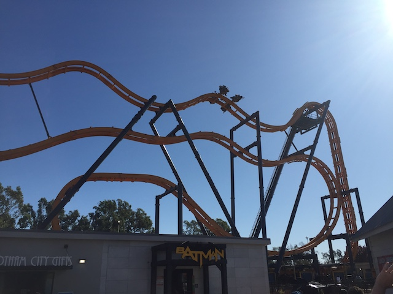
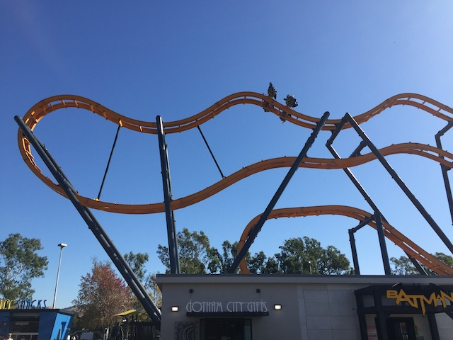
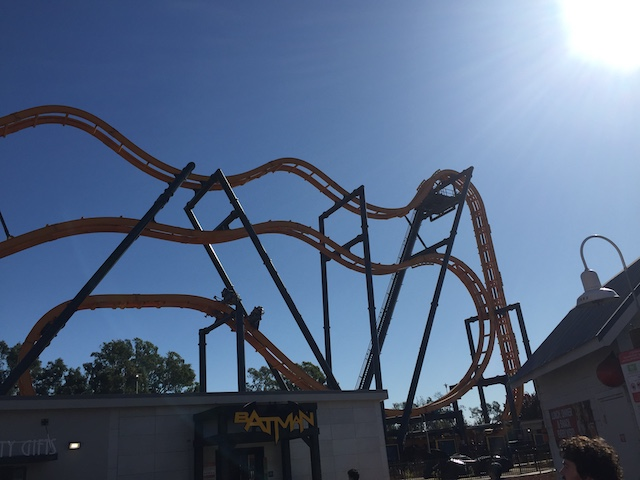
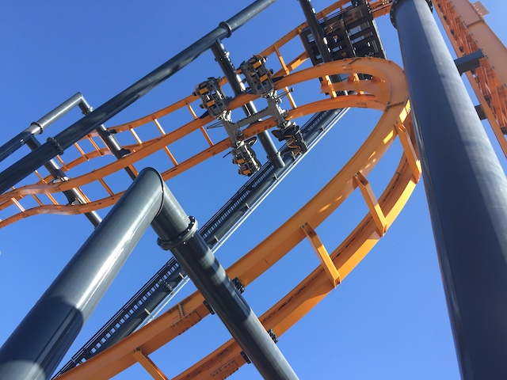
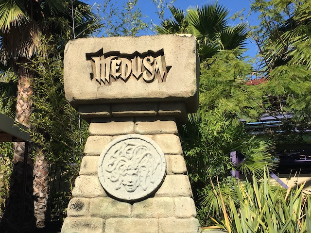
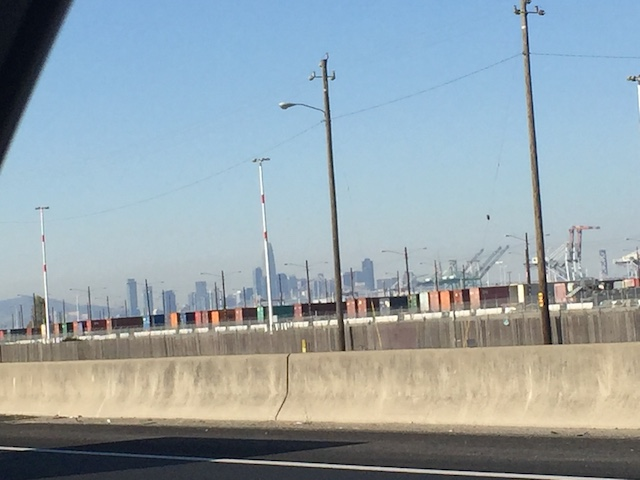
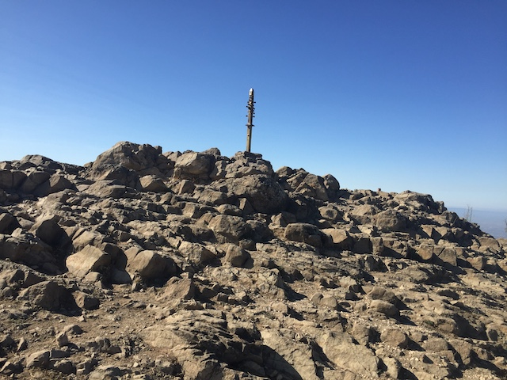

| |
Six Flags Discovory Kingdom 2019
All right. Time for another update. We're back up in Northern California. So...Six Flags Discovory Kingdom added a new coaster for 2019. However, it was just another S&S Free Spin, since...Six Flags has been adding these things like crazy. Anyways, a Free Spin is big enough to get us out there, but not important enough for us to rush. So our Nor-Cal trip was constantly pushed back due to work and money. Eventually, a friend was going up in early November, and...perfect timing! So...we're off to Nor Cal, passing through San Francisco.
We may only be driving through, but hey. Might as well drive across the Golden Gate Bridge (Seriously, fame aside, you have to drive across it to get to our destination tonight).
Driving across the Golden Gate Bridge (Ugh. Windsheild needs to be cleaned. Not good since my car is (or was) my job).
Hmm. There's something different about the Discovory Kingdom skyline. But I just can't put my finger on it.
First ride of the day! =)
All right. We're back for another fun day at Six Flags Discovory Kingdom.
I'm not so sure about that. CGA does have Railblazer you know. ;)
Gee. If only there was something that brought us back up to Six Flags Discovory Kingdom this year.
 Ooh! Nice new DC Universe sign SFDK. I like it.
Ooh! Nice new DC Universe sign SFDK. I like it.
Yep! That's right! We came up to Discovory Kingdom this year to ride Harley Quinn! It was new last year, but we never got around to riding it. Well, we're here to fix that.
 So Harley Quinn is the first of those Skyline Rides. These looked really cool from the models, but after hearing everyone LOATHE Harley Quinn, I was expecting it to be sh*t.
So Harley Quinn is the first of those Skyline Rides. These looked really cool from the models, but after hearing everyone LOATHE Harley Quinn, I was expecting it to be sh*t.
OK. Harley Quinn is not a good ride by any means. It's basically a Super Loop except with some laterals thrown in. So...it's a little fun. Kind of awkward. I certainly wouldn't praise it, but when you consider how much everyone else HATED the ride, I felt like the hate and terribleness of Harley Quinn was greatly overhyped. It wasn't THAT bad. It's just a Super Loop with laterals. That's basicaly what it feels like (BTW, NOT A CREDIT!!!).
"All right. Let's ride...Where's Superman!!? NO!!! YOU MANIACS!!! YOU TOOK OUT SUPERMAN FOR HARLEY QUINN!!! NO!!! YOU ACTUALLY DID IT!!! DAMN YOU!!! DAMN YOU ALL TO HELL!!!"
Oh no. Never mind, It's still here. *phew* =)
This version really is better than all the ones at the Busch/Sea World parks.
 OK. Enough kidding around. We came up for Batman: the Ride. The new S&S Free Spin.
OK. Enough kidding around. We came up for Batman: the Ride. The new S&S Free Spin.

Fun fact. I semi-predicted this ride would exist. I did predict that SFDK would get a Free Spin, that they would name it Batman the Ride, and that it would go in the spot of the Go-Karts. The only thing I was wrong about was the year. I expected this to come to SFDK for 2018. So when they announced Harley Quinn, I just figured I was wrong. And....I was about the date. But for 2019, they got EXACTLY what I predicted they would get for 2018 (Six Flags is kind of easy to make predicitions for).

So I was nervous about this sucking, as Arashi @ Nagashima Spaland was my first Free Spin, and that was INSANE!!! I was worried that this would suck.

While this was definatley better than Green Lantern...I mean Le Vipere, yeah. This sucked compared to Arashi.

It had a couple good flips in it, but nothing too crazy.
We may have discussed the new ride, but now, it's time for some RMC goodness.
Man, Joker was running TERRIBLY today. It felt slow, sluggish, and ugh. Hoping it was just not warmed up. But even so, this is officially now my least favorite RMC.
 Hey look! To make it fit in with the DC Universe theme better, Six Flags renamed V2 into the Flash. Smart name choice.
Hey look! To make it fit in with the DC Universe theme better, Six Flags renamed V2 into the Flash. Smart name choice.
Oh wait. It's still V2. Never mind. I was wrong.
*groan* The crowds today are killing me.
 I know that inline twist is only there because of the stupid height restriction, but it's almost better in a way.
I know that inline twist is only there because of the stupid height restriction, but it's almost better in a way.
FLASH!!!
 While I do love the inline twist portion, the shortened back spike, yeah. that's a downgrade. The front of the train isn't even going vertical.
While I do love the inline twist portion, the shortened back spike, yeah. that's a downgrade. The front of the train isn't even going vertical.
Hey little penguin fella. Please like us on Facebook and follow us Instagram. We need more animal followers.
Hmm. Something tells me that we're not in Sub-sahara Africa right now. Just a hunch.
Anyone up for Monsoon Falls today?
I was very surprised to hear that SFDK is adding a new coaster next year. Yeah, it's just a Spinning Mouse, but it should be a great fit for the park. Hopefully this one spins. Normally, I wouldn't travel for a spinning mouse, but...it's only Nor Cal.
Come on! I gotta get more giraffe statues over here!
Nice try. But associating your car with RMC is not gonna make me more likely to buy it.

Oh yeah. The one major coaster we did not ride so far today! Yeah. Let's get on that.
 I know B&M doesn't really do straight drops. But they're a lot of fun. More of this please.
I know B&M doesn't really do straight drops. But they're a lot of fun. More of this please.
 One of the more underrated B&M Floorless coasters.
One of the more underrated B&M Floorless coasters.
That setting on Lake Chabot is definetly one of the better Six Flags settings.
Decided to head out to a local pizza place called Mountain Mikes. Hey. It was pretty good. =)
We're back from lunch and....Harley Quinn is now offically down for the day. Glad we rode it in the morning.
 Meh. Might as well give Kong a courtesy ride since the park is dead. Eh, it's running OK I guess.
Meh. Might as well give Kong a courtesy ride since the park is dead. Eh, it's running OK I guess.
We were gonna give Boomerang a courtesty ride as well. but...it broke down right before we were about to ride. And we're not waiting for it (You know, it's been too long since I've done one).
Stupid Voodoo. Open on up! Man, Top Spins are rare nowadays. So...it'd be good if it were open. =(
And of course, their rapids ride was closed as well.
Hey look! A promotion for...Six Flags Over Georgia!!? WHY!!? Not even close to here!
Six Flags America? Hey! I was just there this summer!
And now they're showing off the Six Flags park I'm hoping to get to next summer (Fingers crossed that the pandemic doesn't grow worse and kill that trip). So basically, SFDK is showing off all the different Six Flags parks in a parade of banners. And...it's actually a really cool idea. It's good to see all the Six Flags parks getting some love and representation, and....if I wasn't an enthusiast who knew of all these places and visited almost all of them (only missing Darien Lake & Mexico), this would be a really cool learning experience. I totally see my 9 year old self absolutely loving this.
Hello flat ride at SFDK I don't ride too often. Might as well pop on the ride.
Sharks! Yeah. Let's check that out while we're back here!
Shh! Don't tell the shark I'm here! I don't want to be food tonight!
"Yeah bitch! We're not just not scary! We're super heros of the f*cking sea! Take that Steven Spielberg!"
 Well, we've done everything. Not much more to do other than...get some rerides on all the best rides,
Well, we've done everything. Not much more to do other than...get some rerides on all the best rides,
 Fun fact. If you kick where the fins are, that helps you flip. ;)
Fun fact. If you kick where the fins are, that helps you flip. ;)
"$5 for a pet. Hey! A stingrays gotta eat!"
Oh, the joys of going on an empty day.
Trying Joker again in the evening, and....it's a little better, but still slow and sluggish. While it's still a fun ride, I think it's not even the best ride at SFDK anymore! At least it's not if it's running this sluggish (Opening year Joker is)! Now I know SFDK is not the first park where the RMC isn't the star attraction (Hi SFMM & Kings Dominion). But this just felt really dissapointing. =(
HEY SIX FLAGS DISCOVORY KINGDOM!!! IT'S NOVEMBER (Much to the dismay of my Halloween obsessed friends)!!! TAKE DOWN YOUR HALLOWEEN DECORATIONS!!!
 And finally, a mini marathon on Medusa sounds like a good way to close out the day at SFDK to me.
And finally, a mini marathon on Medusa sounds like a good way to close out the day at SFDK to me.

OK. Time to head back home to SoCal. But hey. Gotta find something fun to do on our way home.
Hmm. Hike up Mission Peak. Sure. Why not? Sounds like a fun activity.
 Just in case you get lost.
Just in case you get lost.
I didn't know much about it. Just found it on TripAdvisor. But apparently, it's a famous mountain that locals and tourists enjoy climbing.
It's not a super big mountain, only 2,520 ft. But we're running short on time, having to get back to SoCal tonight. So let's hurry and get up this thing.
 Just checking out some of the scenic wildlife on Mission Peak.
Just checking out some of the scenic wildlife on Mission Peak.

YAY!!! We made it to the top (Well, I did. AJ failed)! Though yeah. It's swarming with flies up here. Gonna head down now.
Nice view from the top.
And that was our SFDK visit this year. I had a lot of fun, the park was empty and I was able to get lots of rerides on all the best rides, and while Batman is crappy compared to Arashi, it's still a fun ride. Hopefully, the apocalypse ends and I can get back to SFDK in Summer 2020.
Home
|